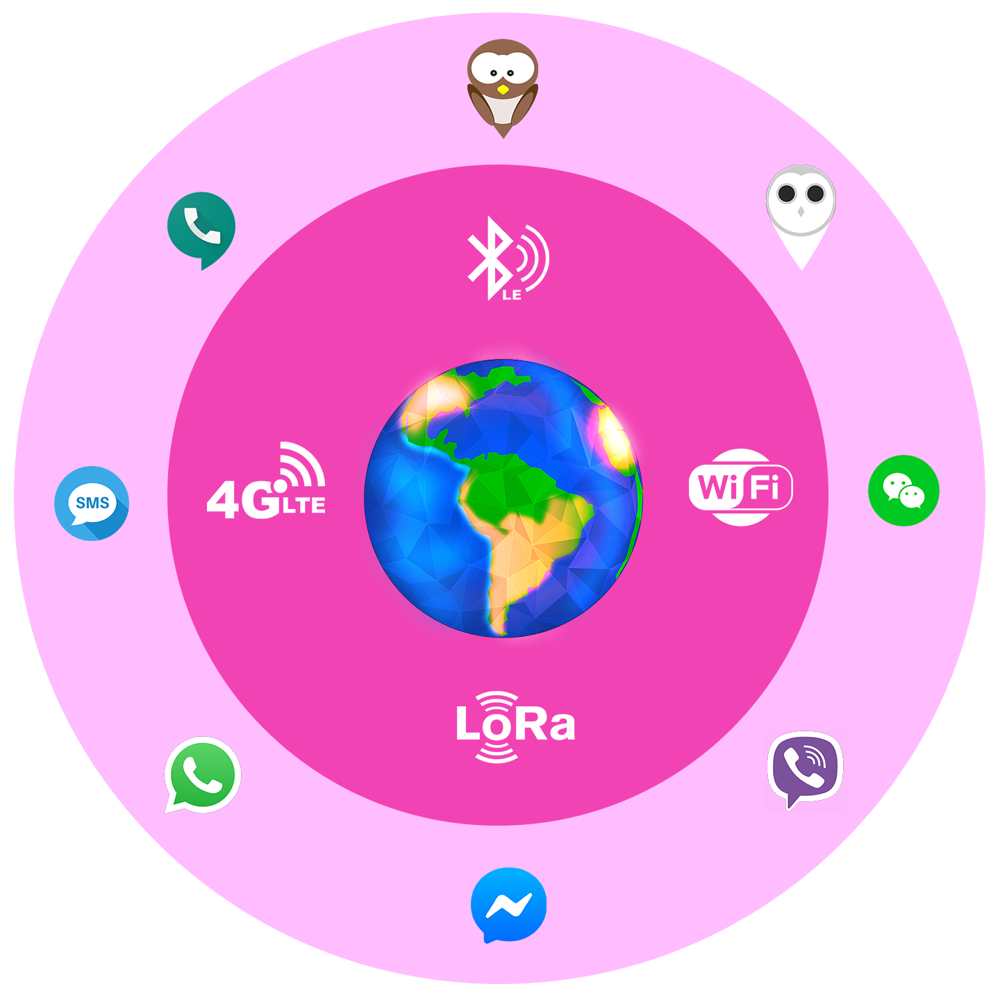

Sparrow Net
"A truely ubiquitous network to connect disater victims with medical experts and communities; agnostic of devices, location, connectivity, application/sysetms in use"
"A truely ubiquitous network to connect disater victims with medical experts and communities; agnostic of devices, location, connectivity, application/sysetms in use"